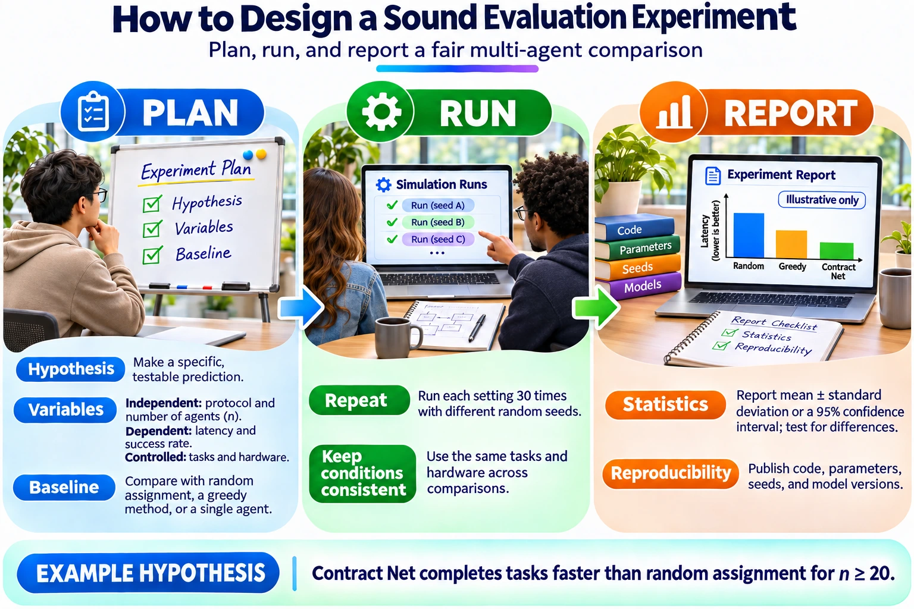

Lab: instrument, trace, evaluate
The Topic 8 practical. In two hours you will trace a small multi-agent system, evaluate it on 20 tasks with three trials each, compare two topologies and report the results in a four-layer table.
Before the lab
Set up
- Python 3.10 or newer. The harness has no other dependencies.
- Run
python lab_harness.pyonce at home; it finishes in seconds and writeslab_output/. - If you will use a real model, have its API key ready, and optionally a LangSmith account.
Revise
- Traces and spans (Module 3)
- pass^k and MAST (Module 5)
- LLM-as-a-judge biases (Module 5)
How this lab follows the evaluation pipeline
Module 5 introduced a five-stage pipeline. This lab builds the first four stages on a small system.
| Stage | Pipeline stage | In this lab |
|---|---|---|
| 1 | Dataset: 20 to 100 test tasks with expected outcomes | 20 tasks you write (step 2) |
| 2 | Traced runs: every run recorded as a trace | Tracing switched on for the coordinator and both workers (step 1) |
| 3 | Evaluators: code checks, LLM judge, human review | Exact match, rubric judge, latency and tokens (step 3) |
| 4 | Experiments: compare versions side by side | Chain against supervisor (star) (step 5) |
| 5 | Monitoring: online evaluation in production | Discussed, not built |
Two-hour plan
1. Instrument
Enable tracing on a small multi-agent system: a coordinator and two workers. Every agent invocation, model call and tool call becomes a span with a parent, timestamps and token counts.
What a finished trace looks like
This is one Contract Net task traced end to end. Your coordinator and two workers should produce the same shape: one root span, one child span per step, timed so you can see waiting and overlap.
Option A: the harness’s built-in tracer
The harness wraps each step in a span using OpenTelemetry GenAI attribute names, so the output looks like what a production tracer records:
with TRACER.span("invoke_agent WorkerA", **{
"gen_ai.operation.name": "invoke_agent",
"gen_ai.agent.name": "WorkerA"}):
with TRACER.span("execute_tool lookup", **{
"gen_ai.operation.name": "execute_tool",
"gen_ai.tool.name": "lookup"}):
result = lookup(question)
answer = llm_step("WorkerA", "answer", question, rng)Option B: LangSmith, as used in the lecture
Set the environment variables, then decorate each agent function. LangSmith builds the span tree from nested calls.
# in your shell
export LANGSMITH_TRACING=true
export LANGSMITH_API_KEY="your-key"
# in your code
from langsmith import traceable
@traceable(name="WorkerA", run_type="chain")
def worker_a(question: str) -> str:
...Check the current LangSmith documentation for setup details; see Evaluation concepts. Any OpenTelemetry-compatible tracer is equally acceptable.
2. Build a dataset
Write 20 tasks with expected outcomes. A good dataset mixes easy, typical and hard tasks, includes at least two tasks where the right answer is “I don’t know” or “not allowed”, and uses outcomes that can be checked exactly where possible.
Save it as a CSV with columns id,question,expected and run python lab_harness.py --tasks tasks.csv.
3. Define evaluators
| Evaluator | Type | In the harness |
|---|---|---|
| Exact match | Code | exact_match(output, expected) |
| Rubric judge | LLM-as-a-judge | rubric_judge(...), a hook for you to implement with a different model from the one under test |
| Latency | Code | Measured around each run; reported as p50 and p95 |
| Token cost | Code | Summed from gen_ai.usage.* span attributes, priced with --price-in and --price-out |
Validate your judge. Label 10 outputs yourself before you trust the rubric judge. Report how often it agrees with you, and swap answer order if you use pairwise comparisons. The rubric prompt in Module 5 is a good starting point.
4. Run k = 3 trials
Run every task three times and compute the success rate and pass^3 for each task. The harness uses the unbiased estimator from τ-bench:
from math import comb
def pass_hat_k(n, c, k):
"""n trials, c successes: probability that k trials drawn from n all succeeded."""
return comb(c, k) / comb(n, k)
# With n = k = 3 this is 1 if all three succeeded, else 0.
# Average it across tasks to get the system's pass^3.With n = k = 3 the estimate per task is simply “all three passed”. Running more trials than k, for example n = 5 with k = 3, gives a smoother estimate.
5. Compare designs


Sequential chain
Coordinator → Worker A → Worker B. Each agent hands its output to the next. Fewer calls, but an early mistake flows straight through.
Supervisor (star)
The coordinator asks both workers, compares their answers and asks again on disagreement. More calls and tokens, but a built-in verification step.
The harness runs both on the same tasks with the same seeds and prints a four-layer table. Here is the output with the simulated agents; your numbers will differ with a real model:
| Layer | Metric | chain | star |
|---------------|---------------------------------|----------------|----------------|
| 1 Agent | Success rate P(Ψ) ± 95% CI | 68.3% ± 11.8% | 75.0% ± 11.0% |
| 2 Interaction | Agent invocations per task | 3.00 | 3.23 |
| 2 Interaction | LLM calls per task | 3.00 | 4.23 |
| 3 System | Latency p50 / p95 (ms) | 10.8 / 13.2 | 14.6 / 20.0 |
| 4 Trust | pass@3 | 90.0% | 90.0% |
| 4 Trust | pass^3 | 50.0% | 60.0% |
| 4 Trust | Tokens per task | 277 | 397 |Read it across the layers. The star is more accurate and more consistent (pass^3 60% against 50%) but uses about 40% more tokens and is slower. The confidence intervals overlap, so 20 tasks are not enough to claim the star is better. That is a finding worth reporting, not hiding.
6. Report
Your report has three required parts. Use the report template.
Four-layer table
At least one metric per layer for both designs, with confidence intervals where you have them.
One chart
For example pass^k for k = 1 to 3 for both designs, or accuracy against cost.
Two failure cases labelled with MAST
Pick tasks from the harness’s “always fail” and “inconsistent” lists, open their traces and name the failure mode.
Submission checklist
- Code with tracing switched on, and the exact model names and versions
tasks.csvwith 20 tasks and expected outcomesresults.csvandtraces.jsonl(or links to your traced runs)- Four-layer table comparing chain and star
- One chart with two sentences of interpretation
- Two failure cases, each with task ID, trace ID, MAST label and a proposed fix
- The random seed and the command you ran, so someone else can reproduce your numbers